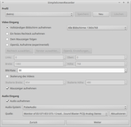

SimpleScreenRecorder
Dieser Artikel wurde für die folgenden Ubuntu-Versionen getestet:
Ubuntu 16.04 Xenial Xerus
Ubuntu 14.04 Trusty Tahr
Zum Verständnis dieses Artikels sind folgende Seiten hilfreich:
SimpleScreenRecorder  ist ein Programm, um den Bildschirm bzw. einen Teil des Bildschirms als Video aufzunehmen. Auch die gleichzeitige Aufnahme von Ton aus einer definierbaren Quelle wird unterstützt. Entgegen dem, was der Name vermuten lässt, bietet dieses Programm sehr viele Konfigurationsmöglichkeiten. Für die Video- und Ton-Spur können verschiedene Formate (Codecs) ausgewählt werden. Das Ergebnis wird dann in einer lokalen Datei gespeichert, die anschließend bei Bedarf mit einem (externen) Video-Editor nachbearbeitet werden kann. Zudem bietet SimpleScreenRecorder die Möglichkeit, unter OpenGL aufzunehmen.
ist ein Programm, um den Bildschirm bzw. einen Teil des Bildschirms als Video aufzunehmen. Auch die gleichzeitige Aufnahme von Ton aus einer definierbaren Quelle wird unterstützt. Entgegen dem, was der Name vermuten lässt, bietet dieses Programm sehr viele Konfigurationsmöglichkeiten. Für die Video- und Ton-Spur können verschiedene Formate (Codecs) ausgewählt werden. Das Ergebnis wird dann in einer lokalen Datei gespeichert, die anschließend bei Bedarf mit einem (externen) Video-Editor nachbearbeitet werden kann. Zudem bietet SimpleScreenRecorder die Möglichkeit, unter OpenGL aufzunehmen.
Bisher fehlen noch ein Timer, Aufnahmeprofile und eine Lokalisierung der Benutzeroberfläche (die Programmsprache ist Englisch). Eine Alternative ist das Programm Kazam.
Installation¶
 Simplescreenrecorder ist nicht in den offiziellen Paketquellen vorhanden, kann aber aus einem "Personal Package Archiv" (PPA) [1] installiert werden. Um den Ton bei Bedarf im MP3-Format aufnehmen zu können, werden folgende Pakete benötigt [2]:
Simplescreenrecorder ist nicht in den offiziellen Paketquellen vorhanden, kann aber aus einem "Personal Package Archiv" (PPA) [1] installiert werden. Um den Ton bei Bedarf im MP3-Format aufnehmen zu können, werden folgende Pakete benötigt [2]:
libavcodec-extra (universe)
 mit apturl
mit apturl
Paketliste zum Kopieren:
sudo apt-get install libavcodec-extra
sudo aptitude install libavcodec-extra
PPA¶
Adresszeile zum Hinzufügen des PPAs:
ppa:maarten-baert/simplescreenrecorder
Hinweis!
Zusätzliche Fremdquellen können das System gefährden.
Ein PPA unterstützt nicht zwangsläufig alle Ubuntu-Versionen. Weitere Informationen sind der  PPA-Beschreibung des Eigentümers/Teams maarten-baert zu entnehmen.
PPA-Beschreibung des Eigentümers/Teams maarten-baert zu entnehmen.
Damit Pakete aus dem PPA genutzt werden können, müssen die Paketquellen neu eingelesen werden.
Nach dem Aktualisieren der Paketquellen kann folgendes Paket installiert werden:
simplescreenrecorder (ppa)
mit apturl
Paketliste zum Kopieren:
sudo apt-get install simplescreenrecorder
sudo aptitude install simplescreenrecorder
Verwendung¶
Bei Ubuntu-Varianten mit einem Anwendungsmenü kann das Programm über den Eintrag "Multimedia -> SimpleScreenRecorder" gestartet [3] werden. Unter Unity gibt man stattdessen den Programmnamen in die Dash ein.
Bei der Benutzerführung hat sich der Programmautor für einen Assistenten mit fünf Schritten entschieden. Solange keine Sonderwünsche vorliegen, können die Vorgaben einfach übernommen werden:
| 1. Willkommen |
|  |
| 2. Aufnahmebereich/Ton |
| 3. Codecs |
 |
| 4. Aufnahme starten |
| 5. Auf Wiedersehen |
Nachfolgend in Kurzform, was bei den Schritten 2, 3 und 4 relevant ist.
Aufnahmebereich und Audio-Input¶
Aufnahmebereich: ganzer Bildschirm (Vollbild), Fenster oder benutzerdefinierter Ausschnitt
Mauszeiger aufnehmen (ja/nein)?
Audio-Input: ALSA oder PulseAudio
Audio- und Video-Codec¶
Dateiname zum Abspeichern. Auf Wunsch können große Dateien automatisch aufgeteilt werden.
Video-Codec: H.264 (Standard), VP8, Theora
Neben den hier genannten Codecs stehen über die Auswahl von "others" noch eine ganze Reihe weiterer Codecs zur Verfügung.
Aufnahme¶
Aufnahmesteuerung: Start, Pause, Speichern (=Stopp)
Tastenkürzel für Aufnahme. Standard: Strg + R
Vorschau-Funktion
Hinweis:
Die Vorschau-Funktion kann leistungsschwache Rechner in die Knie zwingen. Bitte mit Bedacht verwenden.
Problembehebung¶
 Programmübersicht
Programmübersicht- Erstellt mit Inyoka
-
 2004 – 2017 ubuntuusers.de • Einige Rechte vorbehalten
2004 – 2017 ubuntuusers.de • Einige Rechte vorbehalten
Lizenz • Kontakt • Datenschutz • Impressum • Serverstatus -
Serverhousing gespendet von